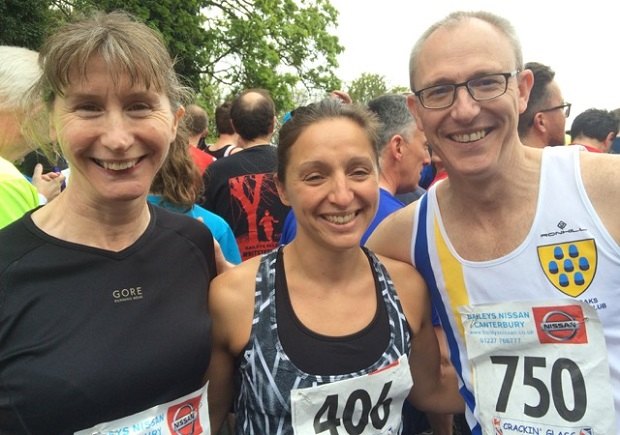
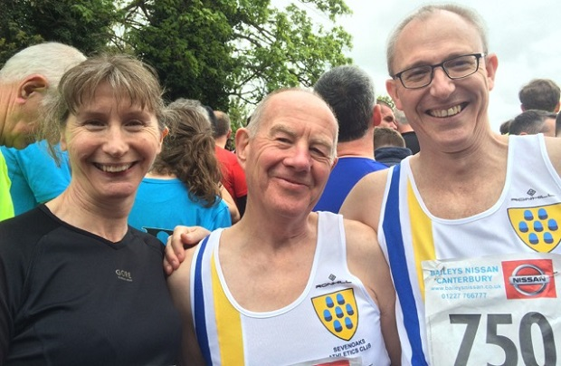

At the Ted Pepper 10k on Monday 2nd May, two of the club's top M70s were in action, with Jim Fitzmaurice winning M70-74 category and Peter Dillon third. Their results were:
| Pos- ition | Bib- No. | Finish Time | Chip Time | Name | Gen- der | Cat- egory | Club or Team | Rank |
|---|---|---|---|---|---|---|---|---|
| 207 | 84 | 00:56:22 | 00:56:18 | JAMES FITZMAURICE | M | M70 | Sevenoaks AC | 1 |
| 232 | 99 | 00:58:05 | 00:57:56 | PETER DILLON | M | M70 | Sevenoaks AC | 2 |
The full results are here.
And four SAC runners ran in the Whitstable 10k, as follows:
| Pos | Race No | Name | Time | Net Time | Category | Cat Pos | Gender | Gen Pos | Club |
|---|---|---|---|---|---|---|---|---|---|
| 104 | 750 | Duncan Warwick-Champion | 00:47:33 | 00:47:24 | MV50 | 19 | Male | 91 | Sevenoaks AC |
| 108 | 407 | Pauline Dalton | 00:47:40 | 00:47:31 | FV45 | 6 | Female | 14 | Sevenoaks AC |
| 113 | 702 | Geoffrey Vine | 00:47:56 | 00:47:47 | MV60 | 5 | Male | 97 | Sevenoaks AC |
| 129 | 406 | Nikola Thompson | 00:49:08 | 00:48:59 | FV35 | 8 | Female | 19 | Sevenoaks AC |
The full results are here.


Also six SAC runners contested the three races at Hildenborough in the afternoon. Two took on the ten-miler, where Lionel Stielow was first M60:
| Position | First Name | Last Name | Club | Age Category | Entry Number | Time |
|---|---|---|---|---|---|---|
| 8 | Nick | Humphrey-Taylor | Sevenoaks AC | M40 | 815 | 01:07:58 |
| 27 | Lionel | Stielow | Sevenoaks AC | M60 | 806 | 01:24:41 |
Another two M60s opted for the five-miler:
| Position | First Name | Last Name | Club | Age Category | Entry Number | Time |
|---|---|---|---|---|---|---|
| 29 | Lyndon | Collins | Sevenoaks AC | M60 | 603 | 00:38:54 |
| 74 | Tony | Ostlere | Sevenoaks AC | M60 | 678 | 00:47:18 |
In the 2.5 mile race, SAC junior Robin Zijdenbos was third female:
| Position | First Name | Last Name | Club | Age Category | Entry Number | Time |
|---|---|---|---|---|---|---|
| 26 | Robin | Zijdenbos | Sevenoaks AC | Female | 529 | 00:26:23 |
The full results from Hildenborough are here, with photos here.